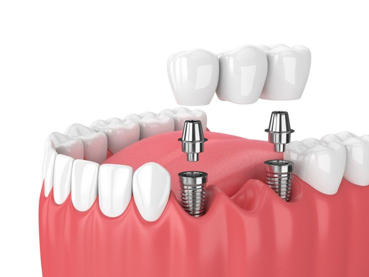

Dental Bridges

Dental bridges are used to replace one or more missing teeth by anchoring artificial teeth to adjacent natural teeth or dental implants. They help restore chewing ability, maintain facial structure, and prevent teeth from shifting.
Benefits of Dental Bridges:
- Restores function and appearance
- Prevents shifting of remaining teeth
- Improves confidence and speech